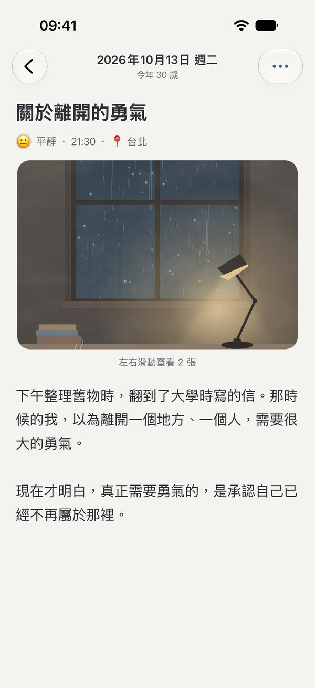
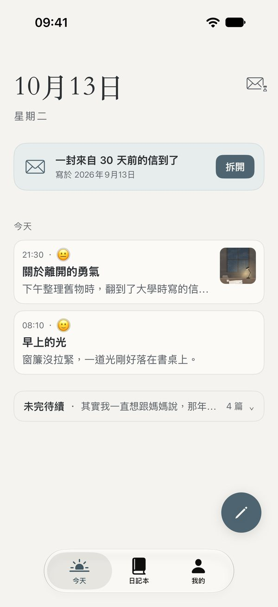
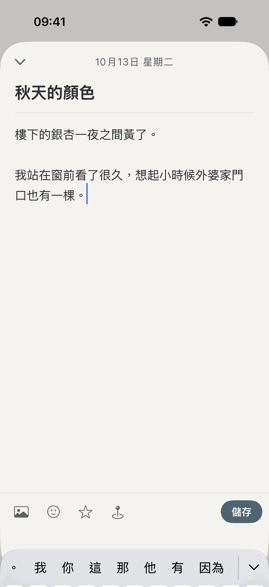
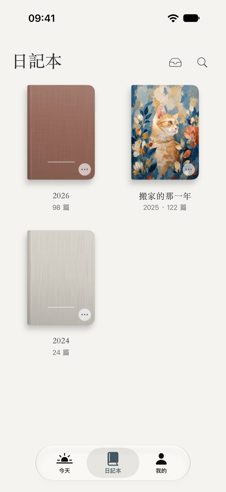
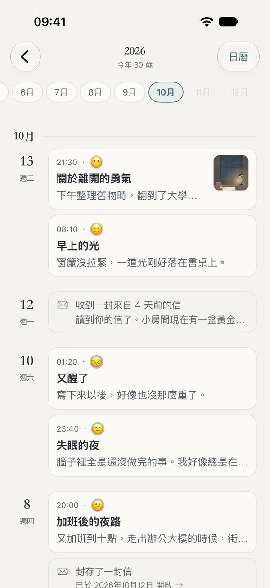
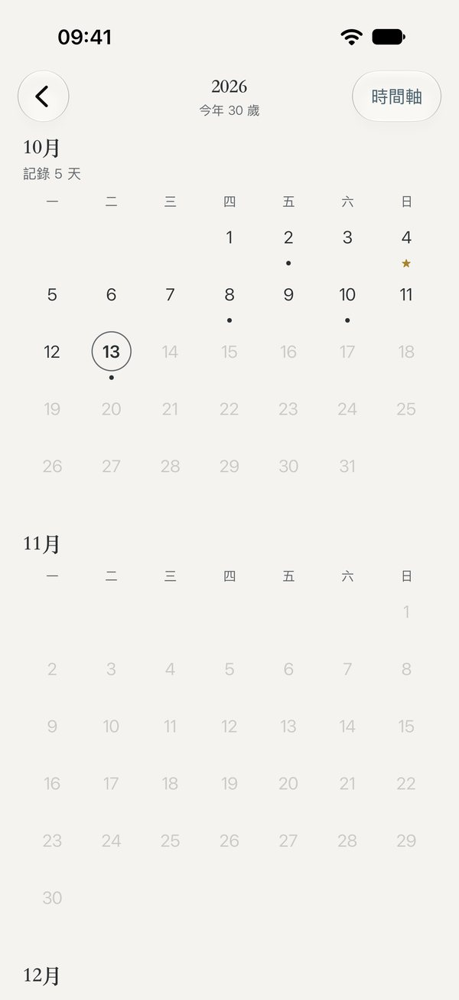
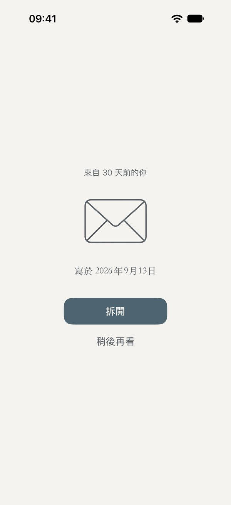
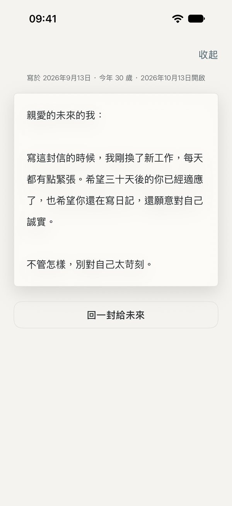
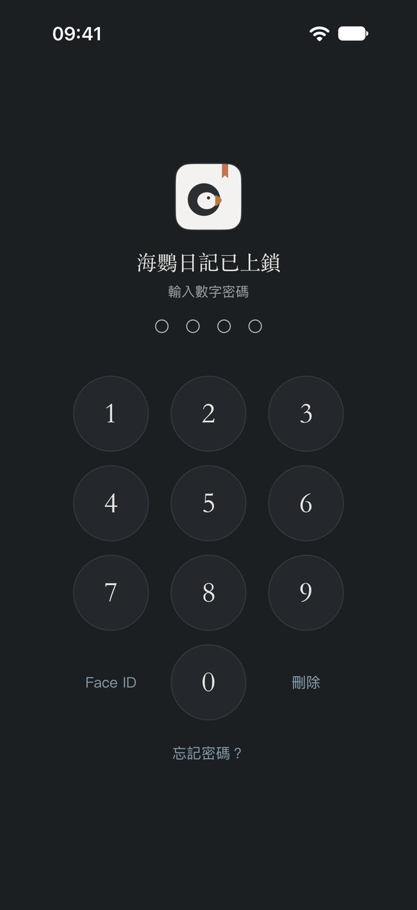

私密 · 安全 · 安靜的日記本
安靜地，
寫下真實的自己
不用註冊，沒有廣告，也沒有人在看。
鎖得住、不會不見、帶得走：日記只儲存在你的裝置和你自己的 iCloud 裡。
免費下載 · iPhone、iPad 和 Mac · iOS 17、macOS 14 以上


安靜地寫
打開就能寫
今天的日期、一句提示語，下面就是一頁紙。心情、照片、所在的城市，想加就加；不想加，就只寫幾句話。沒寫完也不會不見，想寫的時候再回來。

珍藏
一年，一本書
每一年的日記，自動收成一本書。改個書名，換一張封面，選一種喜歡的紙。幾年以後，書架上就是你走過的日子。



每一年，都可以換一張喜歡的封面
回顧
翻回某一天
沿著時間軸一篇一篇往下讀，或者在全年日曆上點開某一天。想找哪一篇，搜尋一下就到。


時間膠囊
寫給未來的自己，也寫給 TA
給未來的自己寫一封信，選好哪一天打開。在那之前，信一直封著，誰也看不到；到了那一天，會輕輕提醒你。讀完，還可以回一封，寫給更遠的未來。
也可以寫給另一半、家人或朋友：信先存在你自己的信箱裡，到你選的那一天提醒你，用 PDF、圖片或信封寄給 TA。


安全、私密
只屬於你
海鸚日記可以設自己的數字密碼，不是你的手機密碼；知道你手機密碼的人，也不能直接打開。
有人用「忘記密碼」重設了密碼，會留下紀錄，你一打開就知道。
App 鎖、日記本鎖、信箱鎖分開管，用 Face ID、Touch ID 或數字密碼解開。
切到背景時自動蓋住螢幕，App 切換器裡看不到你的日記。

不會不見
寫下的，就不會不見
每停頓一秒自動儲存；沒寫完的、寫到一半被打斷的，都替你留著。
從不問「要不要儲存」；修改已經儲存的日記時，原本那篇一直留著。
刪除的日記先進入「最近刪除」，30 天內可以復原。
開啟 iCloud 同步，換手機、刪掉重裝，日記都會從你自己的 iCloud 回來。
永遠屬於你
日記永遠是你的
公開的通用格式（.zip），換手機、換 App 都能完整回復。
每一篇匯出成文字檔，任何地方都能打開。
排成一本書的樣子，可以列印成冊。
不用帳號，也就沒有帳號會遺失、被停用或登入不了。從別處搬過來也很簡單：支援 Markdown、文字檔和常見日記 App 的匯出檔案。
我們的承諾
- 我們看不到你的日記沒有帳號，沒有伺服器
- 不放廣告，不追蹤不賣資料，也不記錄你在 App 裡做了什麼
- 免費的，永遠免費已經免費的，不會改成收費
- 終身版永遠有效以後推出新方案也不縮水
- 永遠能看、能帶走寫下的日記，不付費也一樣
- 不催促，不打卡隔了很久再回來，它還在